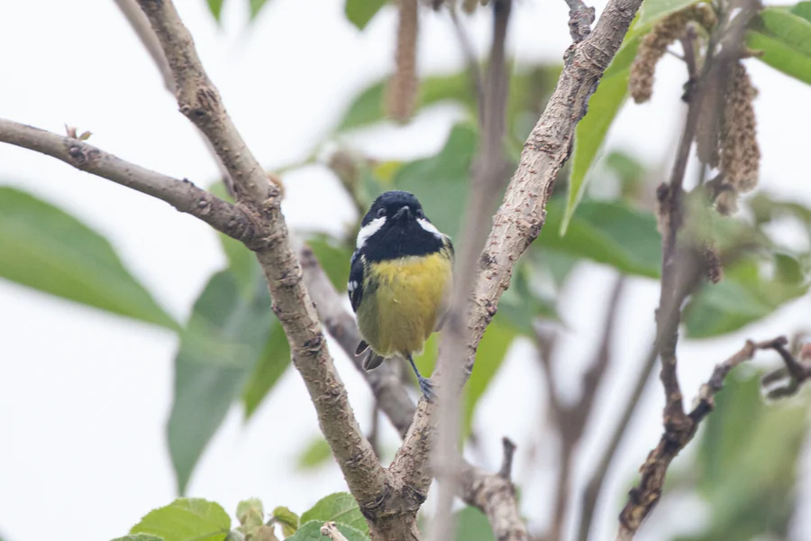

鸟类 · 动物界
黄腹山雀 Pardaliparus venustulus

中国特有的小型山雀，腹部明黄、头顶黑色，常混群在阔叶林冠层活动，是森林里活泼的食虫小鸟。
- 分类
- 门脊索动物门纲鸟纲目雀形目科山雀科属山雀属
- 栖息环境
- 山地阔叶林、混交林与林缘，冬季下到低海拔
- 地理分布
- 中国东部、中部至南部山区，为中国特有
- 保护级别
- IUCN 无危（LC）
物种志
黄腹山雀体长约 10–11 cm，是体型很小的山雀。雄鸟头顶、喉部黑色，脸颊白色，背部橄榄绿，腹部明黄色；雌鸟颜色较淡，头顶偏灰。它常成对或结小群在阔叶林、混交林的树冠层活动，取食昆虫、蜘蛛和虫卵，也会吃少量果实和种子。
黄腹山雀为中国特有，分布于中国东部、中部和南部的山地与丘陵林地，冬季也会下到低海拔地区。繁殖期在树洞、岩缝或人工巢箱中筑巢。它体型虽小，却是森林害虫的重要控制者。由于依赖成熟林地，森林砍伐和碎片化会威胁其种群。
形态与习性
- 体长约 10–11 cm
- 雄鸟头顶黑、脸颊白、腹部明黄
- 雌鸟颜色较淡，头顶偏灰
- 食性昆虫、蜘蛛为主，兼食果实与种子
- 巢树洞、岩缝或人工巢箱
趣味知识
- 黄腹山雀是中国特有鸟类，英文名 Yellow-bellied Tit 直译就是“黄腹山雀”。
- 它常混在其他山雀群中活动，冬季会游荡到低海拔。
- 体型虽小，却能吃掉大量森林害虫。